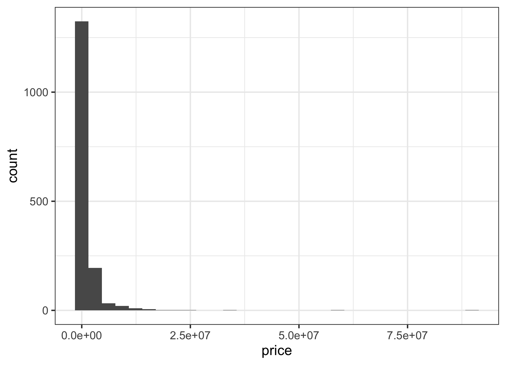
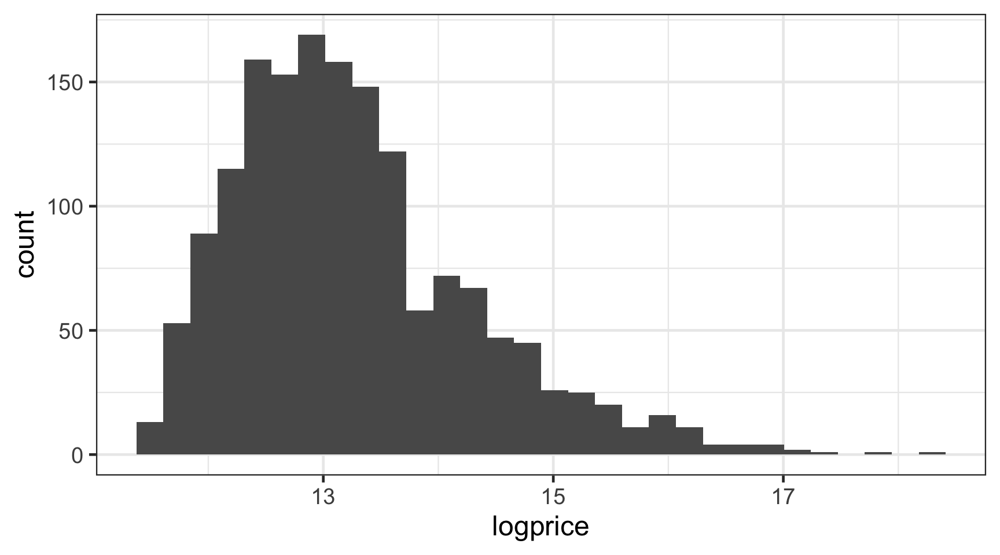
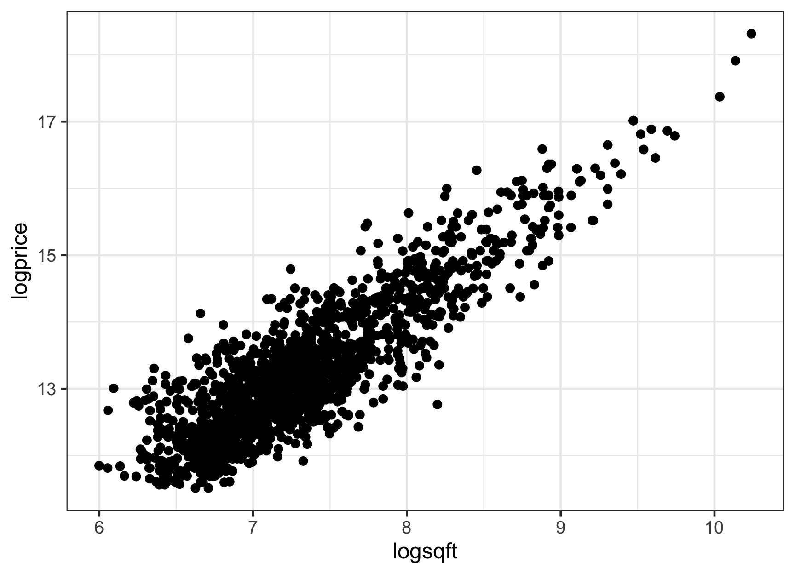
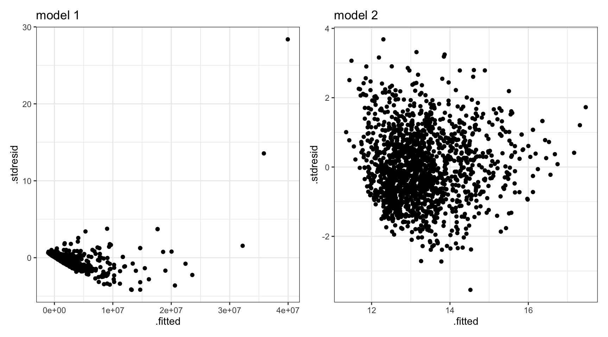

03:00
Concepts in Model Building
STAT 20 UC Berkeley
Announcements
- Lab this week:
- Practice final
- All lecture videos now available
- Quiz 5 Tues 11 am - Weds 11 am
Throwback to Probability
Consider the following very simple game. You have a 20 sided die with each side equally likely. 19 of the sides have a L for “lose” and one side has a W for “win”. In one play of the game, you simply roll the die and win if the W comes up.
How many times would you expect to win if you were to play this game 20 times?
- 0
- 1
- 4
- 5
- 10
- 19
- 20
Steps in model building:
- Statistical question
- Data wrangling
- Exploratory data analysis (EDA)
- Modeling
- Interpretation
Issues to 👀
- Recoding variables
- Transformations
- Dummy variables
- \(R^2\) and \(R^2\) adjusted
https://www.flickr.com/photos/vampiress144/2274846796/
Ex: LA Homes
We’d like to build a model to explain prices of homes in LA as a function of the characteristics of those homes.
\[ \widehat{price} = location + size + pool + acreage \ldots \]
Steps in model building:
- Statistical question
- Data wrangling
- Exploratory data analysis (EDA)
- Modeling
- Interpretation
Statistical Question
Asking a question
A vague question: what explains the price of a house in West LA?
A specific question: how do location, size, acreage, and the presence of a pool correspond to the price of a home in West LA?
\[ \widehat{price} = location + size + pool + acreage \]
Be clear on if you’re doing an exploratory or a confirmatory analysis.
Two types of analyses
Exploratory
seeks to uncover trends in data to help refine the research question for a subsequent analysis.
Confirmatory
starts with a very specific question to confirm an effect found in a previous analysis.


source: https://xkcd.com/882/
Throwback to Probability
Consider the following very simple game. You have a 20 sided die with each side equally likely. 19 of the sides have a L for “lose” and one side has a W for “win”. In one play of the game, you simply roll the die and win if the W comes up.
How many times would you expect to win if you were to play this game 20 times?
- 0
- 1
- 4
- 5
- 10
- 19
- 20
The Problem of Multiple Comparisons
Be clear on if you’re doing an exploratory or a confirmatory analysis.
Exploratory
seeks to uncover trends in data to help refine the research question for a subsequent analysis.
Confirmatory
starts with a very specific question to confirm an effect found in a previous analysis.
The Green Jelly Bean Effect: While you’re exploring, you can often find significant effects just due to chance (type I errors).
Data Wrangling
Data Wrangling
Home price data is available on many websites now, including zillow.com.
# A tibble: 5 × 9
city type bed bath garage sqft pool spa price
<chr> <chr> <dbl> <dbl> <chr> <dbl> <chr> <lgl> <dbl>
1 Long Beach <NA> 0 1 <NA> 513 <NA> NA 119000
2 Long Beach <NA> 0 1 <NA> 550 <NA> NA 153000
3 Long Beach <NA> 0 1 <NA> 550 <NA> NA 205000
4 Long Beach <NA> 0 1 1 1030 <NA> NA 300000
5 Long Beach <NA> 0 1 1 1526 <NA> NA 375000Unit of observation: a home for sale in west LA.
To which population would you feel comfortable generalizing using this data? (you many select several)
Why?
02:00
Data wrangling, cont.
Rows: 1,594
Columns: 9
$ city <chr> "Long Beach", "Long Beach", "Long Beach", "Long Beach", "Long B…
$ type <chr> NA, NA, NA, NA, NA, NA, NA, NA, NA, NA, NA, NA, NA, NA, NA, NA,…
$ bed <dbl> 0, 0, 0, 0, 0, 1, 1, 1, 1, 1, 1, 1, 1, 1, 1, 1, 1, 1, 1, 1, 1, …
$ bath <dbl> 1, 1, 1, 1, 1, 1, 1, 1, 1, 1, 1, 1, 1, 1, 1, 1, 1, 1, 1, 1, 1, …
$ garage <chr> NA, NA, NA, "1", "1", NA, NA, NA, NA, NA, NA, NA, NA, "1", "1",…
$ sqft <dbl> 513, 550, 550, 1030, 1526, 552, 558, 596, 744, 750, 750, 791, 7…
$ pool <chr> NA, NA, NA, NA, NA, NA, NA, NA, NA, NA, NA, NA, NA, NA, NA, NA,…
$ spa <lgl> NA, NA, NA, NA, NA, NA, NA, NA, NA, NA, NA, NA, NA, NA, NA, NA,…
$ price <dbl> 119000, 153000, 205000, 300000, 375000, 159900, 135000, 105000,…Data wrangling: city
# A tibble: 4 × 2
city n
<chr> <int>
1 Beverly Hills 232
2 Long Beach 1062
3 Santa Monica 204
4 Westwood 96Data wrangling: type
# A tibble: 3 × 2
type n
<chr> <int>
1 Condo/Twh 639
2 SFR 916
3 <NA> 39If you wish to change the levels of a categorical variable, you need to recode it.
Data wrangling: type
Data wrangling: type
Data wrangling, cont.
Rows: 1,594
Columns: 9
$ city <chr> "Long Beach", "Long Beach", "Long Beach", "Long Beach", "Long B…
$ type <fct> NA, NA, NA, NA, NA, NA, NA, NA, NA, NA, NA, NA, NA, NA, NA, NA,…
$ bed <dbl> 0, 0, 0, 0, 0, 1, 1, 1, 1, 1, 1, 1, 1, 1, 1, 1, 1, 1, 1, 1, 1, …
$ bath <dbl> 1, 1, 1, 1, 1, 1, 1, 1, 1, 1, 1, 1, 1, 1, 1, 1, 1, 1, 1, 1, 1, …
$ garage <chr> NA, NA, NA, "1", "1", NA, NA, NA, NA, NA, NA, NA, NA, "1", "1",…
$ sqft <dbl> 513, 550, 550, 1030, 1526, 552, 558, 596, 744, 750, 750, 791, 7…
$ pool <chr> NA, NA, NA, NA, NA, NA, NA, NA, NA, NA, NA, NA, NA, NA, NA, NA,…
$ spa <lgl> NA, NA, NA, NA, NA, NA, NA, NA, NA, NA, NA, NA, NA, NA, NA, NA,…
$ price <dbl> 119000, 153000, 205000, 300000, 375000, 159900, 135000, 105000,…Data wrangling: garage
# A tibble: 5 × 2
garage n
<chr> <int>
1 1 260
2 2 666
3 3 37
4 4+ 6
5 <NA> 625We can combine levels of a categorical variable using a similar approach.
Data wrangling: garage
Data wrangling: garage
Data wrangling: garage
Alternative: We can drop the ill-specified observations and convert the data type.
Data wrangling, cont.
Rows: 1,594
Columns: 10
$ city <chr> "Long Beach", "Long Beach", "Long Beach", "Long Beach", "Lo…
$ type <fct> NA, NA, NA, NA, NA, NA, NA, NA, NA, NA, NA, NA, NA, NA, NA,…
$ bed <dbl> 0, 0, 0, 0, 0, 1, 1, 1, 1, 1, 1, 1, 1, 1, 1, 1, 1, 1, 1, 1,…
$ bath <dbl> 1, 1, 1, 1, 1, 1, 1, 1, 1, 1, 1, 1, 1, 1, 1, 1, 1, 1, 1, 1,…
$ garage <chr> NA, NA, NA, "1", "1", NA, NA, NA, NA, NA, NA, NA, NA, "1", …
$ sqft <dbl> 513, 550, 550, 1030, 1526, 552, 558, 596, 744, 750, 750, 79…
$ pool <chr> NA, NA, NA, NA, NA, NA, NA, NA, NA, NA, NA, NA, NA, NA, NA,…
$ spa <lgl> NA, NA, NA, NA, NA, NA, NA, NA, NA, NA, NA, NA, NA, NA, NA,…
$ price <dbl> 119000, 153000, 205000, 300000, 375000, 159900, 135000, 105…
$ garage_cat <fct> NA, NA, NA, small, small, NA, NA, NA, NA, NA, NA, NA, NA, s…What’s going on with
poolandspa?
Data wrangling: pool and spa
Fully wrangled data set
# A tibble: 6 × 8
city type bed bath garage sqft price garage_cat
<chr> <fct> <dbl> <dbl> <chr> <dbl> <dbl> <fct>
1 Long Beach <NA> 0 1 <NA> 513 119000 <NA>
2 Long Beach <NA> 0 1 <NA> 550 153000 <NA>
3 Long Beach <NA> 0 1 <NA> 550 205000 <NA>
4 Long Beach <NA> 0 1 1 1030 300000 small
5 Long Beach <NA> 0 1 1 1526 375000 small
6 Long Beach <NA> 1 1 <NA> 552 159900 <NA> Once the data set is ready to go, save it to a new .csv file.
Exploratory Data Analysis
Exploratory Data Analysis
Our goals are to:
- Develop a sense of the univariate distributions in terms of center, shape, spread, unusual observations.
- Develop a sense of the bivariate and multivariate distributions and what they indicate about the relationship between variables.
Which of the following are not good methods to visualize the distribution of a single variable?
- density plot
- scatterplot
- histogram
- side-by-side boxplots
- dot plot
- bar chart
EDA for price

Question: How would you visualize the relationship between price and city?
# A tibble: 6 × 8
city type bed bath garage sqft price garage_cat
<chr> <fct> <dbl> <dbl> <chr> <dbl> <dbl> <fct>
1 Long Beach <NA> 0 1 <NA> 513 119000 <NA>
2 Long Beach <NA> 0 1 <NA> 550 153000 <NA>
3 Long Beach <NA> 0 1 <NA> 550 205000 <NA>
4 Long Beach <NA> 0 1 1 1030 300000 small
5 Long Beach <NA> 0 1 1 1526 375000 small
6 Long Beach <NA> 1 1 <NA> 552 159900 <NA> Question: How would you visualize the relationship between price and city?
Question: How would you visualize the relationship between price and sqft?
# A tibble: 6 × 8
city type bed bath garage sqft price garage_cat
<chr> <fct> <dbl> <dbl> <chr> <dbl> <dbl> <fct>
1 Long Beach <NA> 0 1 <NA> 513 119000 <NA>
2 Long Beach <NA> 0 1 <NA> 550 153000 <NA>
3 Long Beach <NA> 0 1 <NA> 550 205000 <NA>
4 Long Beach <NA> 0 1 1 1030 300000 small
5 Long Beach <NA> 0 1 1 1526 375000 small
6 Long Beach <NA> 1 1 <NA> 552 159900 <NA> Question: How would you visualize the relationship between price and sqft?
Transformations
Highly skewed data (particularly the response) can be very difficult to model using least squares regression. A common solution is to consider a transformation of the variable.
\[ \widehat{price} \sim sqft \]
versus
\[\widehat{log(price)} \sim log(sqft) \]
In R: log() or log10()
EDA for price

EDA for logprice and logsqft

Modeling
Modeling
Model 1
\[ \widehat{price} \sim sqft \]
Model 2
\[\widehat{log(price)} \sim log(sqft) \]
Comparing residuals

Transformation, cont.
Highly skewed data often leads to invalid models. This can be often be fixed with a transformation, but the interpretations change slightly.
Estimate Std. Error t value Pr(>|t|)
(Intercept) 2.702788 0.14369289 18.80948 1.972382e-71
logsqft 1.441583 0.01953529 73.79375 0.000000e+00A one unit increase in the log sqft of a home is associated with a 1.44 unit increase in the log price of a home.
Dummy Variables
# A tibble: 4 × 2
city n
<chr> <int>
1 Beverly Hills 232
2 Long Beach 1062
3 Santa Monica 204
4 Westwood 96How can we encode a categorical variable like
cityinto a numerical variable so that we can include it in our model?
boardwork
Call:
lm(formula = logprice ~ logsqft + city, data = LA)
Residuals:
Min 1Q Median 3Q Max
-1.2449 -0.2526 -0.0141 0.2181 1.3907
Coefficients:
Estimate Std. Error t value Pr(>|t|)
(Intercept) 5.46554 0.15695 34.824 <2e-16 ***
logsqft 1.15119 0.01872 61.495 <2e-16 ***
cityLong Beach -0.89345 0.03442 -25.959 <2e-16 ***
citySanta Monica -0.09301 0.04028 -2.309 0.0211 *
cityWestwood -0.45846 0.04880 -9.395 <2e-16 ***
---
Signif. codes: 0 '***' 0.001 '**' 0.01 '*' 0.05 '.' 0.1 ' ' 1
Residual standard error: 0.3709 on 1589 degrees of freedom
Multiple R-squared: 0.8737, Adjusted R-squared: 0.8734
F-statistic: 2749 on 4 and 1589 DF, p-value: < 2.2e-16Dummy Variables, cont.
- Categorical variables with \(k\) levels can be recoded as \(k - 1\) dummy variables (also called indicator variables or one-hot encoding).
- The level that is left out of the dummy variables is called the reference level and by default is the first alphabetically. The
interceptestimate refers to this level. - The levels encoded by dummies have a coefficient that captures the deviation of their intercept to the reference level.
Assessing model fit
Our existing statistic to measure how well the model captures the variability in the data is \(R^2\).
\[R^2 = \frac{SSR}{TSS}\]
Note: \(R^2\) can never decrease when additional variables are added to the model.
A more useful statistic when comparing MLR models of difference complexities is adjusted \(R^2\), which balances the ability of the model to explain the data with its simplicity.
\[R^2_{adj} = 1 - \frac{SSE}{TSS} \cdot \frac{n - 1}{n - p - 1} \]
Where we’ve been
- Statistical question
- Data wrangling
- Exploratory Data Analysis
- Modeling
- Interpretation

The only difference between our models and theirs:
- They use a more flexible / complex model
- They have access to more and more varied data